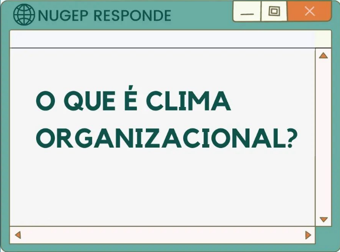

Clima organizacional é um retrato de como os organizadores se sentem em relação à organização. Através de indicadores que mostram a percepção dos colaboradores quanto à gestão, é possível observar como o clima organizacional influencia o desempenho do colaborador no trabalho, bem como a sua forma de se vestir, de se alimentar e sua disposição, mesmo em tarefas rotineiras.
“O clima organizacional é visto como uma atmosfera mutável, pois representa um retrato da organização em um dado momento, sendo capaz de influenciar o comportamento e o desempenho dos indivíduos na organização” (MELARÉ; OLIVEIRA, 2018)
Assim, o clima pode ser avaliado através de questionários próprios para esse fim, e melhorado através de estímulos dos setores de RH e Gestão de Pessoal, bem como da própria administração.